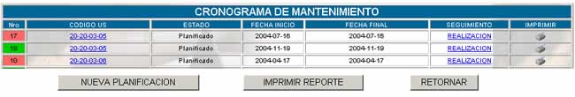
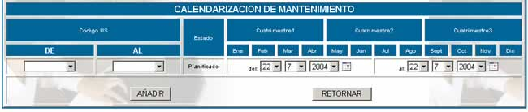

CRONOGRAMA
Como lo establece el manual de
procedimientos de la empresa se debe realizar el mantenimiento de los equipos
de forma planificada, la pantalla principal de esta opción se muestra a
continuación

Donde:
Nro:
especifica el número de calendario planificado
Codigo US: especifica
el código USI del recurso del cual se realiza la planificación de calendario.
Estado; en función de la fecha de la planificación se establece si éste se
encuentra en estado de planificado o realizado.
Fecha de inicio; se refiere a la fecha en la cual el recurso
comenzará su mantenimiento planeado.
Fecha final; especifica la fecha en la cual el recurso terminará
su mantenimiento.
Nueva planificación; la pantalla principal muestra los siguientes campos:

Codigo; escoja el código USI del recurso al cual se dará
mantenimiento
Estado; como se está realizando la planificación en la fecha del sistema
aparece Planificado, en el momento de la planificación, luego será realizado en
el momento de la fecha prevista.
Del – al; se coloca las fechas de inicio y finalización del
mantenimiento.
Seguimiento; para realizar un seguimiento de realización presione
un click en REALIZACIÓN
y le aparecerá una pantalla donde usted confirmará la realización del
mantenimiento.
Imprimir; si usted hace un click en
la opción  obtendrá
un reporte completo del mantenimiento del recurso de forma externa.
obtendrá
un reporte completo del mantenimiento del recurso de forma externa.
Imprimir reporte; genera un reporte de la
lista completa del cronograma de mantenimiento.